CODING AGENTS AS PIXEL WORLD MODELS
traex/GPT-6.1-Sol · common50_0012
点击播放 · 原生 RGB 像素
逐轮保存的候选
回放视频、检查图与代码变化。
每份候选均可单独播放。实际图片检查记录在下方工具轨迹中。
候选 01播放与检查图
点击播放 · 原生 RGB 像素
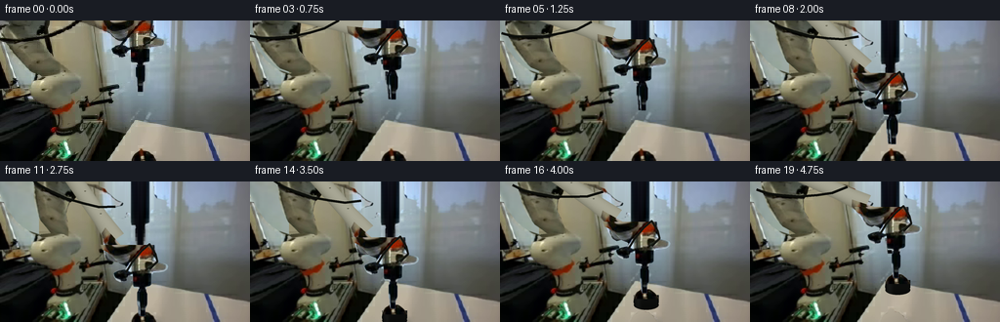
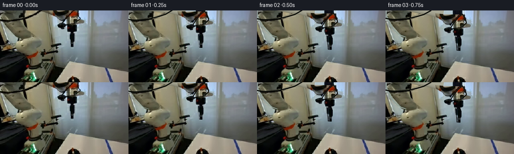
展开代码变化
--- 上一保存版本
+++ 本次保存版本
@@ -0,0 +1,300 @@
+from pathlib import Path
+import numpy as np
+from PIL import Image, ImageDraw, ImageFilter
+import artifact_io
+
+ROOT=Path(__file__).resolve().parent
+W,H=256,144
+SCALE=4
+source=Image.open(ROOT/'first_frame.png').convert('RGB')
+orig=np.asarray(source).copy()
+hi=source.resize((W*SCALE,H*SCALE),Image.Resampling.BICUBIC)
+
+def mask_polygon(points, blur=.20):
+ m=Image.new('L',hi.size)
+ ImageDraw.Draw(m).polygon([(round(x*SCALE),round(y*SCALE)) for x,y in points],fill=255)
+ return m.filter(ImageFilter.GaussianBlur(blur*SCALE)) if blur else m
+
+def extract(mask):
+ layer=hi.convert('RGBA');layer.putalpha(mask);return layer
+
+def rigid(layer,theta=0,pivot=(0,0),target=None):
+ if target is None: target=pivot
+ c,s=np.cos(theta),np.sin(theta)
+ # inverse output to input map; motion is rigid with constant scale
+ px,py=np.array(pivot)*SCALE;tx,ty=np.array(target)*SCALE
+ coeff=(c,s,px-c*tx-s*ty,-s,c,py+s*tx-c*ty)
+ return layer.transform(hi.size,Image.Transform.AFFINE,coeff,Image.Resampling.BICUBIC)
+
+def paste(bg,layer):
+ return Image.alpha_composite(bg.convert('RGBA'),layer)
+
+# Source robot's rigid upper link; shoulder rotary housing is kept as a foreground cap.
+upper_pts=[(0,0),(49,0),(49,9),(48,15),(46,19),(47,25),(49,31),(55,37),(60,44),(63,49),(59,53),(54,55),(47,56),(39,53),(30,50),(24,46),(17,40),(11,32),(6,24),(1,14),(0,9)]
+upper_mask=mask_polygon(upper_pts)
+upper_layer=extract(upper_mask)
+shoulder_pts=[(39,56),(42,54),(51,53),(58,53),(65,54),(69,56),(72,60),(78,63),(81,67),(82,71),(80,74),(77,78),(72,81),(68,82),(68,85),(62,88),(53,89),(45,86),(40,84),(36,81),(31,76),(28,72),(28,66),(31,62)]
+shoulder_layer=extract(mask_polygon(shoulder_pts,.15))
+# Distal rotary assembly, pneumatic body, and vertical tool mount.
+tip_pts=[(101,0),(156,0),(157,7),(157,11),(158,15),(160,18),(166,19),(169,20),(170,22),(169,25),(166,27),(161,28),(155,28),(153,31),(153,40),(151,42),(148,43),(147,48),(140,48),(139,44),(135,44),(134,40),(134,32),(129,31),(128,34),(127,37),(121,38),(117,36),(115,33),(114,30),(115,28),(121,26),(126,25),(127,22),(126,21),(121,19),(117,16),(114,13),(111,11),(108,7),(103,5)]
+tip_mask=mask_polygon(tip_pts,.17)
+tip_layer=extract(tip_mask)
+finger_pts=[(142,43),(146,44),(147,48),(148,50),(148,60),(147,64),(146,65),(146,73),(141,73),(140,70),(140,64),(139,61),(139,49),(140,47)]
+finger_mask=mask_polygon(finger_pts,.15)
+finger_layer=extract(finger_mask)
+
+# Black stopper and metal handle: photograph supplies all visible top/handle texture.
+obj_pts=[(134,144),(135,140),(137,137),(141,135),(142,132),(144,130),(146,131),(148,134),(151,134),(154,136),(157,139),(159,142),(160,144)]
+obj_mask=mask_polygon(obj_pts,.22)
+obj_layer=extract(obj_mask)
+
+# Fixed photographic background. Fill only regions newly uncovered by motion.
+# Background samples are from the one provided frame; no separate imagery is used.
+arr=np.asarray(hi).astype(float)
+Y,X=np.mgrid[0:H*SCALE,0:W*SCALE]/SCALE
+bgarr=arr.copy()
+# the tan wall, preserving the gently varying illumination
+for y in range(H*SCALE):
+ yf=y/SCALE
+ sy=int(min(65,max(17,yf))*SCALE)
+ for x in range(0,105*SCALE):
+ xf=x/SCALE
+ # blue glazing left of the beige door jamb
+ if xf<40:
+ yy=int((42+(min(yf,57)/57)*15)*SCALE)
+ xx=int((12+xf*.22)*SCALE)
+ col=arr[yy,xx].copy()
+ col=col*.82+np.array([130,149,146])*.18
+ col+=(yf-35)*.20
+ else:
+ xx=int((73+(xf-60)*.10)*SCALE)
+ col=arr[sy,xx].copy()
+ col+=(xf-74)*(-.16)
+ bgarr[y,x]=col
+# aluminum jamb and frosted window, above existing visible background rows
+for x in range(101*SCALE,174*SCALE):
+ xf=x/SCALE
+ for y in range(0,76*SCALE):
+ yf=y/SCALE
+ donor_y=39+(yf/76)*5
+ col=arr[int(donor_y*SCALE),x].copy()
+ if xf<107: col-=max(0,30-yf)*.03
+ else: col+=max(0,38-yf)*np.array([.34,.36,.51])
+ bgarr[y,x]=col
+clean=Image.fromarray(np.uint8(np.clip(bgarr,0,255)))
+remove=Image.new('L',hi.size)
+# Put source geometry plus the old cable into the fixed clean plate.
+rm=ImageDraw.Draw(remove)
+for pts in (upper_pts,tip_pts,finger_pts):
+ rm.polygon([(round(x*SCALE),round(y*SCALE)) for x,y in pts],fill=255)
+# originally visible top part of forearm
+rm.polygon([(48*SCALE,0),(108*SCALE,0),(125*SCALE,20),(118*SCALE,21),(111*SCALE,15),(105*SCALE,11),(94*SCALE,9),(87*SCALE,6),(80*SCALE,3)],fill=255)
+# cable contour across the upper frame, plus the top electrical lead
+cable0=[(-3,18),(9,20),(24,19),(41,17),(59,12),(74,7),(88,-2)]
+rm.line([(int(x*SCALE),int(y*SCALE)) for x,y in cable0],fill=255,width=int(3*SCALE))
+rm.line([(126*SCALE,27*SCALE),(133*SCALE,18*SCALE),(145*SCALE,4*SCALE),(150*SCALE,0)],fill=255,width=3*SCALE)
+remove=remove.filter(ImageFilter.MaxFilter(5)).filter(ImageFilter.GaussianBlur(.28*SCALE))
+plate=Image.composite(clean,hi,remove)
+# local photographic table fill to expose the white surface under the stopper
+v=np.asarray(plate).copy().astype(float)
+ref=np.asarray(hi).astype(float)
+# polynomial lighting for table, fit from valid local white top pixels
+sample=[]; vals=[]
+for yy in range(114,144):
+ for xx in range(126,181):
+ if 132<=xx<=161 and yy>=129: continue
+ if xx<136 and yy<119: continue
+ col=orig[yy,xx]
+ if np.min(col)<110 or max(col)-min(col)>45: continue
+ sample.append([1,xx-145,yy-135]);vals.append(col)
+coef=np.linalg.lstsq(np.array(sample),np.array(vals),rcond=None)[0]
+table_color=np.einsum('...j,jc->...c',np.stack([np.ones_like(X),X-145,Y-135],-1),coef)
+tabfill=Image.fromarray(np.uint8(np.clip(table_color,0,255)))
+obj_remove=obj_mask.filter(ImageFilter.MaxFilter(5)).filter(ImageFilter.GaussianBlur(.28*SCALE))
+empty_table=Image.composite(tabfill,plate,obj_remove)
+
+# Arm kinematics: both links have fixed length and a continuously counter-rotating wrist.
+shoulder=np.array([54.,65.])
+elbow0=np.array([22.,-10.])
+end0=np.array([121.,1.])
+L1=np.linalg.norm(elbow0-shoulder)
+L2=np.linalg.norm(end0-elbow0)
+a0=np.arctan2(*(elbow0-shoulder)[::-1])
+b0=np.arctan2(*(end0-elbow0)[::-1])
+
+def ik(end):
+ vec=end-shoulder;d=np.linalg.norm(vec);u=vec/d
+ a=(L1*L1-L2*L2+d*d)/(2*d)
+ h=np.sqrt(max(0,L1*L1-a*a))
+ elbow=shoulder+a*u+h*np.array([u[1],-u[0]])
+ return elbow,np.arctan2(*(elbow-shoulder)[::-1]),np.arctan2(*(end-elbow)[::-1])
+
+# New underside/occluded portions are rigid geometry with muted image-derived finish.
+# A textured ivory link is rendered as one solid capsule at invariant length.
+texture=np.asarray(hi).astype(float)
+def link_layer(elbow,end,angle):
+ out=Image.new('RGBA',hi.size)
+ length=L2
+ dx,dy=(end-elbow)/length
+ nx,ny=-dy,dx
+ along=(X-elbow[0])*dx+(Y-elbow[1])*dy
+ side=(X-elbow[0])*nx+(Y-elbow[1])*ny
+ # narrower central cast link, widened distal servo casing
+ width=8.6+2.0*np.clip((along-65)/25,0,1)
+ interior=(along>4)&(along<length-8)&(np.abs(side)<width)
+ edge=np.minimum(np.minimum(along-4,length-8-along),width-np.abs(side))
+ alpha=np.clip(edge*1.8,0,1)*interior
+ # Smooth cylindrical shading, illuminated from top left.
+ rr=np.clip(side/width,-1,1)
+ diffuse=np.sqrt(np.maximum(0,1-rr*rr))
+ lum=112+44*diffuse-13*rr
+ # original source's fine cast-metal texture without changing geometry
+ sx=np.clip((70+(along%25)*.35)*SCALE,0,W*SCALE-1).astype(int)
+ sy=np.clip((23+(side+11)*.45)*SCALE,0,H*SCALE-1).astype(int)
+ tex=texture[sy,sx].mean(-1)
+ tex=tex-tex.mean()
+ lum+=tex*.045
+ rgb=np.stack([lum+9,lum+8,lum-10],-1)
+ rgba=np.dstack((np.clip(rgb,0,255),255*alpha)).astype('uint8')
+ out=Image.fromarray(rgba,'RGBA')
+ # longitudinal join line and a pair of fixed fasteners on the link
+ d=ImageDraw.Draw(out)
+ for r in [33,61]:
+ p=elbow+np.array([dx,dy])*r+np.array([nx,ny])*(-2.8)
+ box=[(p[0]-1)*SCALE,(p[1]-.65)*SCALE,(p[0]+1)*SCALE,(p[1]+.65)*SCALE]
+ d.ellipse(box,fill=(69,71,61,160))
+ d.arc(box,190,320,fill=(164,162,140,180),width=2)
+ return out
+
+# Original small exposed distal casting, rigidly attached to the forearm.
+cast_mask=mask_polygon([(97,0),(135,0),(136,6),(133,12),(128,17),(125,20),(119,20),(114,17),(109,13),(105,10),(99,7)],.18)
+cast_layer=extract(cast_mask)
+# The observed stopper top is continued below the image border as a short black body.
+def complete_object():
+ out=Image.new('RGBA',hi.size)
+ d=ImageDraw.Draw(out)
+ # back-to-front curved body, with no variation in shape during the lift
+ d.ellipse((134.5*SCALE,140*SCALE,160*SCALE,155.5*SCALE),fill=(13,14,13,255))
+ d.rectangle((134.5*SCALE,142*SCALE,160*SCALE,148*SCALE),fill=(15,17,16,255))
+ d.ellipse((134.5*SCALE,144*SCALE,160*SCALE,155*SCALE),fill=(13,15,14,255))
+ # unobtrusive rim reflection
+ d.arc((135.2*SCALE,145*SCALE,159.3*SCALE,154*SCALE),5,125,fill=(29,31,27,255),width=2)
+ out=paste(out,obj_layer)
+ # fill antialias seam right below photographed frame
+ for yy in range(144*SCALE,151*SCALE):
+ for xx in range(135*SCALE,160*SCALE):
+ if out.getpixel((xx,yy))[3]>0:
+ srcx=min(159,max(135,xx/SCALE))
+ src=orig[143,int(srcx)].astype(float)
+ if np.min(src)<70:
+ fac=.70+.20*(1-(yy/SCALE-144)/7)
+ col=tuple(np.uint8(np.clip(src*fac,0,255)))
+ out.putpixel((xx,yy),col+(255,))
+ return out
+
+# Object extended onto an oversized temporary canvas so its offscreen lower surface can lift in.
+# PIL canvas above clips at image bottom, so use a separate taller object canvas.
+def object_sprite():
+ oh=190*SCALE
+ out=Image.new('RGBA',(W*SCALE,oh))
+ d=ImageDraw.Draw(out)
+ d.ellipse((134.3*SCALE,138.3*SCALE,160.0*SCALE,155.0*SCALE),fill=(14,16,14,255))
+ d.rectangle((134.5*SCALE,140*SCALE,160*SCALE,147*SCALE),fill=(14,16,15,255))
+ d.ellipse((134.5*SCALE,145*SCALE,160*SCALE,155.2*SCALE),fill=(12,14,13,255))
+ # side-wall soft material shading derived from the black photographed rim
+ pix=np.array(out)
+ for yy in range(143*SCALE,155*SCALE):
+ for xx in range(134*SCALE,161*SCALE):
+ if pix[yy,xx,3]:
+ shade=11+9*np.exp(-((xx/SCALE-139)/3.0)**2)
+ shade+=2*np.cos((yy/SCALE-144)*.22)
+ pix[yy,xx,:3]=[shade,shade+1,shade-.5]
+ out=Image.fromarray(pix)
+ photo=Image.new('RGBA',out.size);photo.paste(obj_layer,(0,0));out=Image.alpha_composite(out,photo)
+ return out
+object_full=object_sprite()
+
+def translate_object(dx,dy):
+ t=object_full.transform(hi.size,Image.Transform.AFFINE,(1,0,-dx*SCALE,0,1,-dy*SCALE),Image.Resampling.BICUBIC)
+ return t
+
+def smooth(t):
+ t=np.clip(t,0,1);return t*t*(3-2*t)
+
+def motion(i):
+ # aim, approach, slow final descent, close, and vertical lift
+ if i<=3:
+ dy=8*smooth(i/3);dx=2*smooth(i/3)
+ elif i<=10:
+ u=smooth((i-3)/7);dy=8+57*u;dx=2
+ elif i<=12:
+ dy=65;dx=2
+ else:
+ u=smooth((i-12)/7);dy=65-39*u;dx=2+4*u
+ gap=0 if i==0 else 1.3*smooth(i/2)
+ if i>=10: gap=1.3*(1-smooth((i-10)/2))
+ return dx,dy,gap
+
+def cable_layer(elbow,end,theta,dx,dy):
+ out=Image.new('RGBA',hi.size);d=ImageDraw.Draw(out)
+ # routed cable moves with the cast upper and distal links
+ p=[]
+ c,s=np.cos(theta-a0),np.sin(theta-a0)
+ for x,y in cable0:
+ v=np.array([x,y])-shoulder
+ p.append(shoulder+np.array([c*v[0]-s*v[1],s*v[0]+c*v[1]]))
+ coords=[tuple(v*SCALE) for v in p]
+ d.line(coords,fill=(12,14,10,255),width=round(2.5*SCALE),joint='curve')
+ # distal supply line: strain relief loop is attached to the wrist, not stretched
+ pts=[(127+dx,28+dy),(133+dx,18+dy),(143+dx,6+dy),(151+dx,-1+dy),(157+dx,9+dy),(159+dx,17+dy),(151+dx,25+dy)]
+ d.line([(x*SCALE,y*SCALE) for x,y in pts],fill=(18,20,16,255),width=2*SCALE,joint='curve')
+ return out
+
+frames=[orig]
+for i in range(1,20):
+ dx,dy,gap=motion(i)
+ end=end0+np.array([dx,dy]);elbow,a,b=ik(end)
+ lift=max(0,65-dy) if i>=12 else 0
+ bg=empty_table.copy() if lift>0 else plate.copy()
+ if lift==0:
+ bg=paste(bg,obj_layer)
+ else:
+ # soft contact shadow remains on table, fades while object clears it
+ shadow=Image.new('RGBA',hi.size);ds=ImageDraw.Draw(shadow)
+ opacity=int(30*np.exp(-lift/12))
+ ds.ellipse((134*SCALE,138*SCALE,165*SCALE,153*SCALE),fill=(38,34,26,opacity))
+ shadow=shadow.filter(ImageFilter.GaussianBlur((1+lift*.05)*SCALE));bg=paste(bg,shadow)
+ # A gentle cast shadow on the white surface as the tool approaches.
+ sh=Image.new('RGBA',hi.size);ds=ImageDraw.Draw(sh)
+ strength=int(10*max(0,(dy-30)/35))
+ ds.ellipse((143*SCALE,133*SCALE,164*SCALE,152*SCALE),fill=(34,35,31,strength))
+ sh=sh.filter(ImageFilter.GaussianBlur(3*SCALE))
+ tablemask=mask_polygon([(137,103),(256,123),(256,144),(110,144)],0)
+ sh.putalpha(Image.fromarray(np.uint8(np.asarray(sh.getchannel('A')).astype(float)*np.asarray(tablemask)/255)))
+ bg=paste(bg,sh)
+ bg=paste(bg,rigid(upper_layer,a-a0,shoulder,shoulder))
+ bg=paste(bg,link_layer(elbow,end,b))
+ bg=paste(bg,rigid(cast_layer,b-b0,end0,end))
+ bg=paste(bg,shoulder_layer)
+ if lift>0:
+ bg=paste(bg,translate_object(dx-2, -lift))
+ bg=paste(bg,rigid(tip_layer,0,(0,0),(dx,dy)))
+ # jaw's front/back halves close symmetrically about the metal handle
+ if gap>.03:
+ back=rigid(finger_layer,0,(0,0),(dx-gap,dy-.4))
+ # modest rear jaw shading (same geometry as the observed finger)
+ pp=np.array(back);pp[:,:,:3]=(pp[:,:,:3]*.82).astype(np.uint8)
+ bg=paste(bg,Image.fromarray(pp))
+ bg=paste(bg,rigid(finger_layer,0,(0,0),(dx+gap,dy)))
+ bg=paste(bg,cable_layer(elbow,end,a,dx,dy))
+ rgb=bg.convert('RGB').resize((W,H),Image.Resampling.LANCZOS)
+ frames.append(np.asarray(rgb).astype(np.uint8))
+frames=np.stack(frames)
+assert np.array_equal(frames[0],orig)
+artifact_io.save(frames,ROOT)
+# save frame progression for visual inspection at enlarged resolution
+sheet=Image.new('RGB',(W*4*3,H*3*2),(28,28,28))
+for j,k in enumerate([0,4,8,12,16,19]):
+ sheet.paste(Image.fromarray(frames[k]).resize((W*4,H*4)),((j%3)*W*4,(j//3)*H*4))
+sheet.save(ROOT/'.tmp'/'progress.png')
+print('Generated',frames.shape,frames.dtype)
候选 02播放与检查图
点击播放 · 原生 RGB 像素

展开代码变化
--- 上一保存版本
+++ 本次保存版本
@@ -36,7 +36,7 @@
shoulder_pts=[(39,56),(42,54),(51,53),(58,53),(65,54),(69,56),(72,60),(78,63),(81,67),(82,71),(80,74),(77,78),(72,81),(68,82),(68,85),(62,88),(53,89),(45,86),(40,84),(36,81),(31,76),(28,72),(28,66),(31,62)]
shoulder_layer=extract(mask_polygon(shoulder_pts,.15))
# Distal rotary assembly, pneumatic body, and vertical tool mount.
-tip_pts=[(101,0),(156,0),(157,7),(157,11),(158,15),(160,18),(166,19),(169,20),(170,22),(169,25),(166,27),(161,28),(155,28),(153,31),(153,40),(151,42),(148,43),(147,48),(140,48),(139,44),(135,44),(134,40),(134,32),(129,31),(128,34),(127,37),(121,38),(117,36),(115,33),(114,30),(115,28),(121,26),(126,25),(127,22),(126,21),(121,19),(117,16),(114,13),(111,11),(108,7),(103,5)]
+tip_pts=[(135,0),(156,0),(157,7),(157,11),(158,15),(160,18),(166,19),(169,20),(170,22),(169,25),(166,27),(161,28),(155,28),(153,31),(153,40),(151,42),(148,43),(147,48),(140,48),(139,44),(135,44),(134,40),(134,32),(129,31),(128,34),(127,37),(121,38),(117,36),(115,33),(114,30),(115,28),(121,26),(126,25),(130,24),(131,18),(134,12),(135,7)]
tip_mask=mask_polygon(tip_pts,.17)
tip_layer=extract(tip_mask)
finger_pts=[(142,43),(146,44),(147,48),(148,50),(148,60),(147,64),(146,65),(146,73),(141,73),(140,70),(140,64),(139,61),(139,49),(140,47)]
@@ -76,10 +76,13 @@
xf=x/SCALE
for y in range(0,76*SCALE):
yf=y/SCALE
- donor_y=39+(yf/76)*5
+ donor_y=82
col=arr[int(donor_y*SCALE),x].copy()
- if xf<107: col-=max(0,30-yf)*.03
- else: col+=max(0,38-yf)*np.array([.34,.36,.51])
+ if xf<107:
+ col=arr[int((25+yf*.25)*SCALE),x].copy()
+ else:
+ u=max(0,(82-yf)/82)
+ col+=np.array([54,59,62])*u**1.15
bgarr[y,x]=col
clean=Image.fromarray(np.uint8(np.clip(bgarr,0,255)))
remove=Image.new('L',hi.size)
@@ -116,7 +119,7 @@
# Arm kinematics: both links have fixed length and a continuously counter-rotating wrist.
shoulder=np.array([54.,65.])
elbow0=np.array([22.,-10.])
-end0=np.array([121.,1.])
+end0=np.array([142.,5.])
L1=np.linalg.norm(elbow0-shoulder)
L2=np.linalg.norm(end0-elbow0)
a0=np.arctan2(*(elbow0-shoulder)[::-1])
@@ -140,14 +143,16 @@
along=(X-elbow[0])*dx+(Y-elbow[1])*dy
side=(X-elbow[0])*nx+(Y-elbow[1])*ny
# narrower central cast link, widened distal servo casing
- width=8.6+2.0*np.clip((along-65)/25,0,1)
- interior=(along>4)&(along<length-8)&(np.abs(side)<width)
- edge=np.minimum(np.minimum(along-4,length-8-along),width-np.abs(side))
+ width=10.5+1.0*np.clip((along-65)/25,0,1)
+ # rounded cast edges, fixed section throughout rotation
+ axial=np.maximum(np.maximum(7-along,along-(length-24)),0)
+ edge=width-np.sqrt(side**2+axial**2)
+ interior=edge>0
alpha=np.clip(edge*1.8,0,1)*interior
# Smooth cylindrical shading, illuminated from top left.
rr=np.clip(side/width,-1,1)
diffuse=np.sqrt(np.maximum(0,1-rr*rr))
- lum=112+44*diffuse-13*rr
+ lum=106+43*diffuse-15*rr
# original source's fine cast-metal texture without changing geometry
sx=np.clip((70+(along%25)*.35)*SCALE,0,W*SCALE-1).astype(int)
sy=np.clip((23+(side+11)*.45)*SCALE,0,H*SCALE-1).astype(int)
@@ -293,7 +298,7 @@
assert np.array_equal(frames[0],orig)
artifact_io.save(frames,ROOT)
# save frame progression for visual inspection at enlarged resolution
-sheet=Image.new('RGB',(W*4*3,H*3*2),(28,28,28))
+sheet=Image.new('RGB',(W*4*3,H*4*2),(28,28,28))
for j,k in enumerate([0,4,8,12,16,19]):
sheet.paste(Image.fromarray(frames[k]).resize((W*4,H*4)),((j%3)*W*4,(j//3)*H*4))
sheet.save(ROOT/'.tmp'/'progress.png')
候选 03播放与检查图

候选 04播放与检查图
点击播放 · 原生 RGB 像素
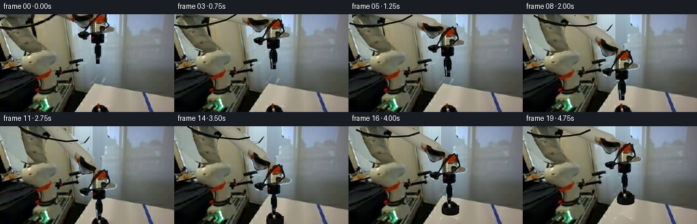
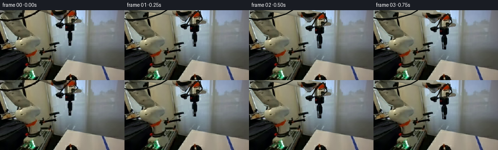
展开代码变化
--- 上一保存版本
+++ 本次保存版本
@@ -76,13 +76,13 @@
xf=x/SCALE
for y in range(0,76*SCALE):
yf=y/SCALE
- donor_y=82
+ donor_y=60 if xf<136 else 82
col=arr[int(donor_y*SCALE),x].copy()
if xf<107:
col=arr[int((25+yf*.25)*SCALE),x].copy()
else:
- u=max(0,(82-yf)/82)
- col+=np.array([54,59,62])*u**1.15
+ u=max(0,(donor_y-yf)/donor_y)
+ col+=np.array([40,44,49])*u**1.15
bgarr[y,x]=col
clean=Image.fromarray(np.uint8(np.clip(bgarr,0,255)))
remove=Image.new('L',hi.size)
@@ -92,6 +92,7 @@
rm.polygon([(round(x*SCALE),round(y*SCALE)) for x,y in pts],fill=255)
# originally visible top part of forearm
rm.polygon([(48*SCALE,0),(108*SCALE,0),(125*SCALE,20),(118*SCALE,21),(111*SCALE,15),(105*SCALE,11),(94*SCALE,9),(87*SCALE,6),(80*SCALE,3)],fill=255)
+rm.polygon([(97*SCALE,0),(135*SCALE,0),(136*SCALE,6*SCALE),(133*SCALE,12*SCALE),(128*SCALE,17*SCALE),(125*SCALE,21*SCALE),(118*SCALE,21*SCALE),(113*SCALE,17*SCALE),(108*SCALE,13*SCALE),(104*SCALE,10*SCALE),(98*SCALE,7*SCALE)],fill=255)
# cable contour across the upper frame, plus the top electrical lead
cable0=[(-3,18),(9,20),(24,19),(41,17),(59,12),(74,7),(88,-2)]
rm.line([(int(x*SCALE),int(y*SCALE)) for x,y in cable0],fill=255,width=int(3*SCALE))
@@ -148,6 +149,7 @@
axial=np.maximum(np.maximum(7-along,along-(length-24)),0)
edge=width-np.sqrt(side**2+axial**2)
interior=edge>0
+ # right end continues into a cylindrical bearing, never a disconnected part
alpha=np.clip(edge*1.8,0,1)*interior
# Smooth cylindrical shading, illuminated from top left.
rr=np.clip(side/width,-1,1)
@@ -161,7 +163,7 @@
lum+=tex*.045
rgb=np.stack([lum+9,lum+8,lum-10],-1)
rgba=np.dstack((np.clip(rgb,0,255),255*alpha)).astype('uint8')
- out=Image.fromarray(rgba,'RGBA')
+ out=Image.fromarray(rgba)
# longitudinal join line and a pair of fixed fasteners on the link
d=ImageDraw.Draw(out)
for r in [33,61]:
@@ -169,6 +171,9 @@
box=[(p[0]-1)*SCALE,(p[1]-.65)*SCALE,(p[0]+1)*SCALE,(p[1]+.65)*SCALE]
d.ellipse(box,fill=(69,71,61,160))
d.arc(box,190,320,fill=(164,162,140,180),width=2)
+ # distal bearing: rounded rigid projected housing completing link-to-wrist connection
+ d.line([tuple((end-np.array([dx,dy])*22)*SCALE),tuple(end*SCALE)],fill=(140,139,120,255),width=15*SCALE)
+ d.ellipse(((end[0]-7.5)*SCALE,(end[1]-7.5)*SCALE,(end[0]+7.5)*SCALE,(end[1]+7.5)*SCALE),fill=(134,134,115,255))
return out
# Original small exposed distal casting, rigidly attached to the forearm.
候选 05播放与检查图
点击播放 · 原生 RGB 像素
展开代码变化
--- 上一保存版本
+++ 本次保存版本
@@ -114,7 +114,9 @@
coef=np.linalg.lstsq(np.array(sample),np.array(vals),rcond=None)[0]
table_color=np.einsum('...j,jc->...c',np.stack([np.ones_like(X),X-145,Y-135],-1),coef)
tabfill=Image.fromarray(np.uint8(np.clip(table_color,0,255)))
-obj_remove=obj_mask.filter(ImageFilter.MaxFilter(5)).filter(ImageFilter.GaussianBlur(.28*SCALE))
+obj_remove=Image.new('L',hi.size)
+ImageDraw.Draw(obj_remove).ellipse((129*SCALE,126*SCALE,166*SCALE,161*SCALE),fill=255)
+obj_remove=obj_remove.filter(ImageFilter.GaussianBlur(1.9*SCALE))
empty_table=Image.composite(tabfill,plate,obj_remove)
# Arm kinematics: both links have fixed length and a continuously counter-rotating wrist.
@@ -180,28 +182,6 @@
cast_mask=mask_polygon([(97,0),(135,0),(136,6),(133,12),(128,17),(125,20),(119,20),(114,17),(109,13),(105,10),(99,7)],.18)
cast_layer=extract(cast_mask)
# The observed stopper top is continued below the image border as a short black body.
-def complete_object():
- out=Image.new('RGBA',hi.size)
- d=ImageDraw.Draw(out)
- # back-to-front curved body, with no variation in shape during the lift
- d.ellipse((134.5*SCALE,140*SCALE,160*SCALE,155.5*SCALE),fill=(13,14,13,255))
- d.rectangle((134.5*SCALE,142*SCALE,160*SCALE,148*SCALE),fill=(15,17,16,255))
- d.ellipse((134.5*SCALE,144*SCALE,160*SCALE,155*SCALE),fill=(13,15,14,255))
- # unobtrusive rim reflection
- d.arc((135.2*SCALE,145*SCALE,159.3*SCALE,154*SCALE),5,125,fill=(29,31,27,255),width=2)
- out=paste(out,obj_layer)
- # fill antialias seam right below photographed frame
- for yy in range(144*SCALE,151*SCALE):
- for xx in range(135*SCALE,160*SCALE):
- if out.getpixel((xx,yy))[3]>0:
- srcx=min(159,max(135,xx/SCALE))
- src=orig[143,int(srcx)].astype(float)
- if np.min(src)<70:
- fac=.70+.20*(1-(yy/SCALE-144)/7)
- col=tuple(np.uint8(np.clip(src*fac,0,255)))
- out.putpixel((xx,yy),col+(255,))
- return out
-
# Object extended onto an oversized temporary canvas so its offscreen lower surface can lift in.
# PIL canvas above clips at image bottom, so use a separate taller object canvas.
def object_sprite():
@@ -255,6 +235,14 @@
p.append(shoulder+np.array([c*v[0]-s*v[1],s*v[0]+c*v[1]]))
coords=[tuple(v*SCALE) for v in p]
d.line(coords,fill=(12,14,10,255),width=round(2.5*SCALE),joint='curve')
+ # Continuously routed flexible cable between the two rigid link strain reliefs.
+ q0=p[-1];q3=np.array([151+dx,-1+dy])
+ q1=q0+np.array([16,-14]);q2=q3+np.array([-15,-20])
+ bridge=[]
+ for t in np.linspace(0,1,30):
+ v=(1-t)**3*q0+3*(1-t)**2*t*q1+3*(1-t)*t*t*q2+t**3*q3
+ bridge.append(tuple(v*SCALE))
+ d.line(bridge,fill=(12,14,10,255),width=round(2.4*SCALE),joint='curve')
# distal supply line: strain relief loop is attached to the wrist, not stretched
pts=[(127+dx,28+dy),(133+dx,18+dy),(143+dx,6+dy),(151+dx,-1+dy),(157+dx,9+dy),(159+dx,17+dy),(151+dx,25+dy)]
d.line([(x*SCALE,y*SCALE) for x,y in pts],fill=(18,20,16,255),width=2*SCALE,joint='curve')
可观测工具轨迹
实际执行的命令与返回图片。
命令 1exit 0
/bin/bash -lc "ls -la && cat prompt.txt && printf '\\n---RULES---\\n' && cat GENERATION_RULES.md"
命令 2exit 0
/bin/bash -lc "cat task_spec.json && cat artifact_io.py && python - <<'PY'
from PIL import Image
im=Image.open('first_frame.png');print(im.size);im.resize((1024,576)).save('.tmp/enlarged.png')
PY"命令 3exit 0
/bin/bash -lc "python - <<'PY'
from PIL import Image
im=Image.open('first_frame.png');im.resize((1280,720),Image.Resampling.NEAREST).save('.tmp/nearest.png')
im.crop((105,108,173,144)).resize((680,360)).save('.tmp/object.png')
PY"命令 4exit 0
/bin/bash -lc "python - <<'PY' import numpy as np S=np.array([55.,69]);E=np.array([21.,-7]);W=np.array([142.,10]); l1=np.linalg.norm(E-S);l2=np.linalg.norm(W-E) for dy in [0,20,40,60]: w=W+[3,dy];v=w-S;d=np.linalg.norm(v);a=(l1*l1-l2*l2+d*d)/(2*d);h=np.sqrt(l1*l1-a*a);e=S+a*v/d+h*np.array([v[1],-v[0]])/d print(dy,e,'upper',np.degrees(np.arctan2(*(e-S)[::-1])),'fore',np.degrees(np.arctan2(*(w-e)[::-1]))) PY"
命令 5exit 0
/bin/bash -lc "python - <<'PY'
from PIL import Image, ImageDraw
im=Image.open('first_frame.png').resize((1024,576),Image.Resampling.NEAREST);d=ImageDraw.Draw(im)
for x in range(0,256,10):d.line((x*4,0,x*4,576),fill=(255,40,40),width=1);d.text((x*4+1,1),str(x),fill='red')
for y in range(0,144,10):d.line((0,y*4,1024,y*4),fill=(255,40,40),width=1);d.text((1,y*4+1),str(y),fill='red')
im.save('.tmp/grid.png')
PY"命令 6exit 0
/bin/bash -lc "python - <<'PY'
from PIL import Image
import numpy as np
im=np.asarray(Image.open('first_frame.png'))
for y in [0,10,20,30,40,50,60,70]:
print(y,[(x,im[y,x].tolist()) for x in [60,70,80,90,100,105,110,115,120,125,130,155,160,165,170,175,180,190]])
PY"命令 7exit 0
/bin/bash -lc "python - <<'PY'
from PIL import Image
im=Image.open('first_frame.png');im.crop((80,0,175,80)).resize((760,640)).save('.tmp/wrist.png')
PY"命令 8exit 0
/bin/bash -lc "python - <<'PY'
from PIL import Image
im=Image.open('first_frame.png');im.crop((0,0,96,98)).resize((672,686)).save('.tmp/upper.png')
PY"命令 9exit 0
/bin/bash -lc "cat > generate.py <<'PY'
from pathlib import Path
import numpy as np
from PIL import Image, ImageDraw, ImageFilter
import artifact_io
ROOT=Path(__file__).resolve().parent
W,H=256,144
SCALE=4
source=Image.open(ROOT/'first_frame.png').convert('RGB')
orig=np.asarray(source).copy()
hi=source.resize((W*SCALE,H*SCALE),Image.Resampling.BICUBIC)
def mask_polygon(points, blur=.20):
m=Image.new('L',hi.size)
ImageDraw.Draw(m).polygon([(round(x*SCALE),round(y*SCALE)) for x,y in points],fill=255)
return m.filter(ImageFilter.GaussianBlur(blur*SCALE)) if blur else m
def extract(mask):
layer=hi.convert('RGBA');layer.putalpha(mask);return layer
def rigid(layer,theta=0,pivot=(0,0),target=None):
if target is None: target=pivot
c,s=np.cos(theta),np.sin(theta)
# inverse output to input map; motion is rigid with constant scale
px,py=np.array(pivot)*SCALE;tx,ty=np.array(target)*SCALE
coeff=(c,s,px-c*tx-s*ty,-s,c,py+s*tx-c*ty)
return layer.transform(hi.size,Image.Transform.AFFINE,coeff,Image.Resampling.BICUBIC)
def paste(bg,layer):
return Image.alpha_composite(bg.convert('RGBA'),layer)
# Source robot's rigid upper link; shoulder rotary housing is kept as a foreground cap.
upper_pts=[(0,0),(49,0),(49,9),(48,15),(46,19),(47,25),(49,31),(55,37),(60,44),(63,49),(59,53),(54,55),(47,56),(39,53),(30,50),(24,46),(17,40),(11,32),(6,24),(1,14),(0,9)]
upper_mask=mask_polygon(upper_pts)
upper_layer=extract(upper_mask)
shoulder_pts=[(39,56),(42,54),(51,53),(58,53),(65,54),(69,56),(72,60),(78,63),(81,67),(82,71),(80,74),(77,78),(72,81),(68,82),(68,85),(62,88),(53,89),(45,86),(40,84),(36,81),(31,76),(28,72),(28,66),(31,62)]
shoulder_layer=extract(mask_polygon(shoulder_pts,.15))
# Distal rotary assembly, pneumatic body, and vertical tool mount.
tip_pts=[(101,0),(156,0),(157,7),(157,11),(158,15),(160,18),(166,19),(169,20),(170,22),(169,25),(166,27),(161,28),(155,28),(153,31),(153,40),(151,42),(148,43),(147,48),(140,48),(139,44),(135,44),(134,40),(134,32),(129,31),(128,34),(127,37),(121,38),(117,36),(115,33),(114,30),(115,28),(121,26),(126,25),(127,22),(126,21),(121,19),(117,16),(114,13),(111,11),(108,7),(103,5)]
tip_mask=mask_polygon(tip_pts,.17)
tip_layer=extract(tip_mask)
finger_pts=[(142,43),(146,44),(147,48),(148,50),(148,60),(147,64),(146,65),(146,73),(141,73),(140,70),(140,64),(139,61),(139,49),(140,47)]
finger_mask=mask_polygon(finger_pts,.15)
finger_layer=extract(finger_mask)
# Black stopper and metal handle: photograph supplies all visible top/handle texture.
obj_pts=[(134,144),(135,140),(137,137),(141,135),(142,132),(144,130),(146,131),(148,134),(151,134),(154,136),(157,139),(159,142),(160,144)]
obj_mask=mask_polygon(obj_pts,.22)
obj_layer=extract(obj_mask)
# Fixed photographic background. Fill only regions newly uncovered by motion.
# Background samples are from the one provided frame; no separate imagery is used.
arr=np.asarray(hi).astype(float)
Y,X=np.mgrid[0:H*SCALE,0:W*SCALE]/SCALE
bgarr=arr.copy()
# the tan wall, preserving the gently varying illumination
for y in range(H*SCALE):
yf=y/SCALE
sy=int(min(65,max(17,yf))*SCALE)
for x in range(0,105*SCALE):
xf=x/SCALE
# blue glazing left of the beige door jamb
if xf<40:
yy=int((42+(min(yf,57)/57)*15)*SCALE)
xx=int((12+xf*.22)*SCALE)
col=arr[yy,xx].copy()
col=col*.82+np.array([130,149,146])*.18
col+=(yf-35)*.20
else:
xx=int((73+(xf-60)*.10)*SCALE)
col=arr[sy,xx].copy()
col+=(xf-74)*(-.16)
bgarr[y,x]=col
# aluminum jamb and frosted window, above existing visible background rows
for x in range(101*SCALE,174*SCALE):
xf=x/SCALE
for y in range(0,76*SCALE):
yf=y/SCALE
donor_y=39+(yf/76)*5
col=arr[int(donor_y*SCALE),x].copy()
if xf<107: col-=max(0,30-yf)*.03
else: col+=max(0,38-yf)*np.array([.34,.36,.51])
bgarr[y,x]=col
clean=Image.fromarray(np.uint8(np.clip(bgarr,0,255)))
remove=Image.new('L',hi.size)
# Put source geometry plus the old cable into the fixed clean plate.
rm=ImageDraw.Draw(remove)
for pts in (upper_pts,tip_pts,finger_pts):
rm.polygon([(round(x*SCALE),round(y*SCALE)) for x,y in pts],fill=255)
# originally visible top part of forearm
rm.polygon([(48*SCALE,0),(108*SCALE,0),(125*SCALE,20),(118*SCALE,21),(111*SCALE,15),(105*SCALE,11),(94*SCALE,9),(87*SCALE,6),(80*SCALE,3)],fill=255)
# cable contour across the upper frame, plus the top electrical lead
cable0=[(-3,18),(9,20),(24,19),(41,17),(59,12),(74,7),(88,-2)]
rm.line([(int(x*SCALE),int(y*SCALE)) for x,y in cable0],fill=255,width=int(3*SCALE))
rm.line([(126*SCALE,27*SCALE),(133*SCALE,18*SCALE),(145*SCALE,4*SCALE),(150*SCALE,0)],fill=255,width=3*SCALE)
remove=remove.filter(ImageFilter.MaxFilter(5)).filter(ImageFilter.GaussianBlur(.28*SCALE))
plate=Image.composite(clean,hi,remove)
# local photographic table fill to expose the white surface under the stopper
v=np.asarray(plate).copy().astype(float)
ref=np.asarray(hi).astype(float)
# polynomial lighting for table, fit from valid local white top pixels
sample=[]; vals=[]
for yy in range(114,144):
for xx in range(126,181):
if 132<=xx<=161 and yy>=129: continue
if xx<136 and yy<119: continue
col=orig[yy,xx]
if np.min(col)<110 or max(col)-min(col)>45: continue
sample.append([1,xx-145,yy-135]);vals.append(col)
coef=np.linalg.lstsq(np.array(sample),np.array(vals),rcond=None)[0]
table_color=np.einsum('...j,jc->...c',np.stack([np.ones_like(X),X-145,Y-135],-1),coef)
tabfill=Image.fromarray(np.uint8(np.clip(table_color,0,255)))
obj_remove=obj_mask.filter(ImageFilter.MaxFilter(5)).filter(ImageFilter.GaussianBlur(.28*SCALE))
empty_table=Image.composite(tabfill,plate,obj_remove)
# Arm kinematics: both links have fixed length and a continuously counter-rotating wrist.
shoulder=np.array([54.,65.])
elbow0=np.array([22.,-10.])
end0=np.array([121.,1.])
L1=np.linalg.norm(elbow0-shoulder)
L2=np.linalg.norm(end0-elbow0)
a0=np.arctan2(*(elbow0-shoulder)[::-1])
b0=np.arctan2(*(end0-elbow0)[::-1])
def ik(end):
vec=end-shoulder;d=np.linalg.norm(vec);u=vec/d
a=(L1*L1-L2*L2+d*d)/(2*d)
h=np.sqrt(max(0,L1*L1-a*a))
elbow=shoulder+a*u+h*np.array([u[1],-u[0]])
return elbow,np.arctan2(*(elbow-shoulder)[::-1]),np.arctan2(*(end-elbow)[::-1])
# New underside/occluded portions are rigid geometry with muted image-derived finish.
# A textured ivory link is rendered as one solid capsule at invariant length.
texture=np.asarray(hi).astype(float)
def link_layer(elbow,end,angle):
out=Image.new('RGBA',hi.size)
length=L2
dx,dy=(end-elbow)/length
nx,ny=-dy,dx
along=(X-elbow[0])*dx+(Y-elbow[1])*dy
side=(X-elbow[0])*nx+(Y-elbow[1])*ny
# narrower central cast link, widened distal servo casing
width=8.6+2.0*np.clip((along-65)/25,0,1)
interior=(along>4)&(along<length-8)&(np.abs(side)<width)
edge=np.minimum(np.minimum(along-4,length-8-along),width-np.abs(side))
alpha=np.clip(edge*1.8,0,1)*interior
# Smooth cylindrical shading, illuminated from top left.
rr=np.clip(side/width,-1,1)
diffuse=np.sqrt(np.maximum(0,1-rr*rr))
lum=112+44*diffuse-13*rr
# original source's fine cast-metal texture without changing geometry
sx=np.clip((70+(along%25)*.35)*SCALE,0,W*SCALE-1).astype(int)
sy=np.clip((23+(side+11)*.45)*SCALE,0,H*SCALE-1).astype(int)
tex=texture[sy,sx].mean(-1)
tex=tex-tex.mean()
lum+=tex*.045
rgb=np.stack([lum+9,lum+8,lum-10],-1)
rgba=np.dstack((np.clip(rgb,0,255),255*alpha)).astype('uint8')
out=Image.fromarray(rgba,'RGBA')
# longitudinal join line and a pair of fixed fasteners on the link
d=ImageDraw.Draw(out)
for r in [33,61]:
p=elbow+np.array([dx,dy])*r+np.array([nx,ny])*(-2.8)
box=[(p[0]-1)*SCALE,(p[1]-.65)*SCALE,(p[0]+1)*SCALE,(p[1]+.65)*SCALE]
d.ellipse(box,fill=(69,71,61,160))
d.arc(box,190,320,fill=(164,162,140,180),width=2)
return out
# Original small exposed distal casting, rigidly attached to the forearm.
cast_mask=mask_polygon([(97,0),(135,0),(136,6),(133,12),(128,17),(125,20),(119,20),(114,17),(109,13),(105,10),(99,7)],.18)
cast_layer=extract(cast_mask)
# The observed stopper top is continued below the image border as a short black body.
def complete_object():
out=Image.new('RGBA',hi.size)
d=ImageDraw.Draw(out)
# back-to-front curved body, with no variation in shape during the lift
d.ellipse((134.5*SCALE,140*SCALE,160*SCALE,155.5*SCALE),fill=(13,14,13,255))
d.rectangle((134.5*SCALE,142*SCALE,160*SCALE,148*SCALE),fill=(15,17,16,255))
d.ellipse((134.5*SCALE,144*SCALE,160*SCALE,155*SCALE),fill=(13,15,14,255))
# unobtrusive rim reflection
d.arc((135.2*SCALE,145*SCALE,159.3*SCALE,154*SCALE),5,125,fill=(29,31,27,255),width=2)
out=paste(out,obj_layer)
# fill antialias seam right below photographed frame
for yy in range(144*SCALE,151*SCALE):
for xx in range(135*SCALE,160*SCALE):
if out.getpixel((xx,yy))[3]>0:
srcx=min(159,max(135,xx/SCALE))
src=orig[143,int(srcx)].astype(float)
if np.min(src)<70:
fac=.70+.20*(1-(yy/SCALE-144)/7)
col=tuple(np.uint8(np.clip(src*fac,0,255)))
out.putpixel((xx,yy),col+(255,))
return out
# Object extended onto an oversized temporary canvas so its offscreen lower surface can lift in.
# PIL canvas above clips at image bottom, so use a separate taller object canvas.
def object_sprite():
oh=190*SCALE
out=Image.new('RGBA',(W*SCALE,oh))
d=ImageDraw.Draw(out)
d.ellipse((134.3*SCALE,138.3*SCALE,160.0*SCALE,155.0*SCALE),fill=(14,16,14,255))
d.rectangle((134.5*SCALE,140*SCALE,160*SCALE,147*SCALE),fill=(14,16,15,255))
d.ellipse((134.5*SCALE,145*SCALE,160*SCALE,155.2*SCALE),fill=(12,14,13,255))
# side-wall soft material shading derived from the black photographed rim
pix=np.array(out)
for yy in range(143*SCALE,155*SCALE):
for xx in range(134*SCALE,161*SCALE):
if pix[yy,xx,3]:
shade=11+9*np.exp(-((xx/SCALE-139)/3.0)**2)
shade+=2*np.cos((yy/SCALE-144)*.22)
pix[yy,xx,:3]=[shade,shade+1,shade-.5]
out=Image.fromarray(pix)
photo=Image.new('RGBA',out.size);photo.paste(obj_layer,(0,0));out=Image.alpha_composite(out,photo)
return out
object_full=object_sprite()
def translate_object(dx,dy):
t=object_full.transform(hi.size,Image.Transform.AFFINE,(1,0,-dx*SCALE,0,1,-dy*SCALE),Image.Resampling.BICUBIC)
return t
def smooth(t):
t=np.clip(t,0,1);return t*t*(3-2*t)
def motion(i):
# aim, approach, slow final descent, close, and vertical lift
if i<=3:
dy=8*smooth(i/3);dx=2*smooth(i/3)
elif i<=10:
u=smooth((i-3)/7);dy=8+57*u;dx=2
elif i<=12:
dy=65;dx=2
else:
u=smooth((i-12)/7);dy=65-39*u;dx=2+4*u
gap=0 if i==0 else 1.3*smooth(i/2)
if i>=10: gap=1.3*(1-smooth((i-10)/2))
return dx,dy,gap
def cable_layer(elbow,end,theta,dx,dy):
out=Image.new('RGBA',hi.size);d=ImageDraw.Draw(out)
# routed cable moves with the cast upper and distal links
p=[]
c,s=np.cos(theta-a0),np.sin(theta-a0)
for x,y in cable0:
v=np.array([x,y])-shoulder
p.append(shoulder+np.array([c*v[0]-s*v[1],s*v[0]+c*v[1]]))
coords=[tuple(v*SCALE) for v in p]
d.line(coords,fill=(12,14,10,255),width=round(2.5*SCALE),joint='curve')
# distal supply line: strain relief loop is attached to the wrist, not stretched
pts=[(127+dx,28+dy),(133+dx,18+dy),(143+dx,6+dy),(151+dx,-1+dy),(157+dx,9+dy),(159+dx,17+dy),(151+dx,25+dy)]
d.line([(x*SCALE,y*SCALE) for x,y in pts],fill=(18,20,16,255),width=2*SCALE,joint='curve')
return out
frames=[orig]
for i in range(1,20):
dx,dy,gap=motion(i)
end=end0+np.array([dx,dy]);elbow,a,b=ik(end)
lift=max(0,65-dy) if i>=12 else 0
bg=empty_table.copy() if lift>0 else plate.copy()
if lift==0:
bg=paste(bg,obj_layer)
else:
# soft contact shadow remains on table, fades while object clears it
shadow=Image.new('RGBA',hi.size);ds=ImageDraw.Draw(shadow)
opacity=int(30*np.exp(-lift/12))
ds.ellipse((134*SCALE,138*SCALE,165*SCALE,153*SCALE),fill=(38,34,26,opacity))
shadow=shadow.filter(ImageFilter.GaussianBlur((1+lift*.05)*SCALE));bg=paste(bg,shadow)
# A gentle cast shadow on the white surface as the tool approaches.
sh=Image.new('RGBA',hi.size);ds=ImageDraw.Draw(sh)
strength=int(10*max(0,(dy-30)/35))
ds.ellipse((143*SCALE,133*SCALE,164*SCALE,152*SCALE),fill=(34,35,31,strength))
sh=sh.filter(ImageFilter.GaussianBlur(3*SCALE))
tablemask=mask_polygon([(137,103),(256,123),(256,144),(110,144)],0)
sh.putalpha(Image.fromarray(np.uint8(np.asarray(sh.getchannel('A')).astype(float)*np.asarray(tablemask)/255)))
bg=paste(bg,sh)
bg=paste(bg,rigid(upper_layer,a-a0,shoulder,shoulder))
bg=paste(bg,link_layer(elbow,end,b))
bg=paste(bg,rigid(cast_layer,b-b0,end0,end))
bg=paste(bg,shoulder_layer)
if lift>0:
bg=paste(bg,translate_object(dx-2, -lift))
bg=paste(bg,rigid(tip_layer,0,(0,0),(dx,dy)))
# jaw's front/back halves close symmetrically about the metal handle
if gap>.03:
back=rigid(finger_layer,0,(0,0),(dx-gap,dy-.4))
# modest rear jaw shading (same geometry as the observed finger)
pp=np.array(back);pp[:,:,:3]=(pp[:,:,:3]*.82).astype(np.uint8)
bg=paste(bg,Image.fromarray(pp))
bg=paste(bg,rigid(finger_layer,0,(0,0),(dx+gap,dy)))
bg=paste(bg,cable_layer(elbow,end,a,dx,dy))
rgb=bg.convert('RGB').resize((W,H),Image.Resampling.LANCZOS)
frames.append(np.asarray(rgb).astype(np.uint8))
frames=np.stack(frames)
assert np.array_equal(frames[0],orig)
artifact_io.save(frames,ROOT)
# save frame progression for visual inspection at enlarged resolution
sheet=Image.new('RGB',(W*4*3,H*3*2),(28,28,28))
for j,k in enumerate([0,4,8,12,16,19]):
sheet.paste(Image.fromarray(frames[k]).resize((W*4,H*4)),((j%3)*W*4,(j//3)*H*4))
sheet.save(ROOT/'.tmp'/'progress.png')
print('Generated',frames.shape,frames.dtype)
PY
python generate.py"命令 10exit 0
/bin/bash -lc "python - <<'PY'
p='generate.py'
s=open(p).read()
s=s.replace(\"tip_pts=[(101,0),(156,0)\",\"tip_pts=[(135,0),(156,0)\")
s=s.replace(\"(129,31),(128,34),(127,37),(121,38),(117,36),(115,33),(114,30),(115,28),(121,26),(126,25),(127,22),(126,21),(121,19),(117,16),(114,13),(111,11),(108,7),(103,5)]\", \"(129,31),(128,34),(127,37),(121,38),(117,36),(115,33),(114,30),(115,28),(121,26),(126,25),(130,24),(131,18),(134,12),(135,7)]\")
s=s.replace(\"donor_y=39+(yf/76)*5\\n col=arr[int(donor_y*SCALE),x].copy()\\n if xf<107: col-=max(0,30-yf)*.03\\n else: col+=max(0,38-yf)*np.array([.34,.36,.51])\", \"donor_y=82\\n col=arr[int(donor_y*SCALE),x].copy()\\n if xf<107:\\n col=arr[int((25+yf*.25)*SCALE),x].copy()\\n else:\\n u=max(0,(82-yf)/82)\\n col+=np.array([54,59,62])*u**1.15\")
s=s.replace(\"end0=np.array([121.,1.])\", \"end0=np.array([142.,5.])\")
s=s.replace(\"width=8.6+2.0*np.clip((along-65)/25,0,1)\\n interior=(along>4)&(along<length-8)&(np.abs(side)<width)\\n edge=np.minimum(np.minimum(along-4,length-8-along),width-np.abs(side))\", \"width=10.5+1.0*np.clip((along-65)/25,0,1)\\n # rounded cast edges, fixed section throughout rotation\\n axial=np.maximum(np.maximum(7-along,along-(length-24)),0)\\n edge=width-np.sqrt(side**2+axial**2)\\n interior=edge>0\")
s=s.replace(\"lum=112+44*diffuse-13*rr\", \"lum=106+43*diffuse-15*rr\")
s=s.replace(\"sheet=Image.new('RGB',(W*4*3,H*3*2)\",\"sheet=Image.new('RGB',(W*4*3,H*4*2)\")
open(p,'w').write(s)
PY
python generate.py"命令 11exit 0
/bin/bash -lc "python - <<'PY' p='generate.py';s=open(p).read() s=s.replace(\"donor_y=82\\n col=arr[int(donor_y*SCALE),x].copy()\", \"donor_y=60 if xf<136 else 82\\n col=arr[int(donor_y*SCALE),x].copy()\") s=s.replace(\"u=max(0,(82-yf)/82)\\n col+=np.array([54,59,62])*u**1.15\", \"u=max(0,(donor_y-yf)/donor_y)\\n col+=np.array([40,44,49])*u**1.15\") s=s.replace(\"# cable contour across the upper frame, plus the top electrical lead\", \"rm.polygon([(97*SCALE,0),(135*SCALE,0),(136*SCALE,6*SCALE),(133*SCALE,12*SCALE),(128*SCALE,17*SCALE),(125*SCALE,21*SCALE),(118*SCALE,21*SCALE),(113*SCALE,17*SCALE),(108*SCALE,13*SCALE),(104*SCALE,10*SCALE),(98*SCALE,7*SCALE)],fill=255)\\n# cable contour across the upper frame, plus the top electrical lead\") s=s.replace(\"interior=edge>0\", \"interior=edge>0\\n # right end continues into a cylindrical bearing, never a disconnected part\") s=s.replace(\"return out\\n\\n# Original small exposed distal casting\", \"# distal bearing: rounded rigid projected housing completing link-to-wrist connection\\n d.line([tuple((end-np.array([dx,dy])*22)*SCALE),tuple(end*SCALE)],fill=(140,139,120,255),width=15*SCALE)\\n d.ellipse(((end[0]-7.5)*SCALE,(end[1]-7.5)*SCALE,(end[0]+7.5)*SCALE,(end[1]+7.5)*SCALE),fill=(134,134,115,255))\\n return out\\n\\n# Original small exposed distal casting\") s=s.replace(\"Image.fromarray(rgba,'RGBA')\", \"Image.fromarray(rgba)\") open(p,'w').write(s) PY python generate.py"
命令 12exit 0
/bin/bash -lc "python - <<'PY'
from PIL import Image
Image.open('frames/19.png').resize((1024,576)).save('.tmp/final.png')
PY"命令 13exit 0
/bin/bash -lc "python - <<'PY'
p='generate.py';s=open(p).read()
s=s.replace(\"obj_remove=obj_mask.filter(ImageFilter.MaxFilter(5)).filter(ImageFilter.GaussianBlur(.28*SCALE))\", \"obj_remove=Image.new('L',hi.size)\\nImageDraw.Draw(obj_remove).ellipse((129*SCALE,126*SCALE,166*SCALE,161*SCALE),fill=255)\\nobj_remove=obj_remove.filter(ImageFilter.GaussianBlur(1.9*SCALE))\")
s=s.replace(\"# distal supply line: strain relief loop is attached to the wrist, not stretched\", \"# Continuously routed flexible cable between the two rigid link strain reliefs.\\n q0=p[-1];q3=np.array([151+dx,-1+dy])\\n q1=q0+np.array([16,-14]);q2=q3+np.array([-15,-20])\\n bridge=[]\\n for t in np.linspace(0,1,30):\\n v=(1-t)**3*q0+3*(1-t)**2*t*q1+3*(1-t)*t*t*q2+t**3*q3\\n bridge.append(tuple(v*SCALE))\\n d.line(bridge,fill=(12,14,10,255),width=round(2.4*SCALE),joint='curve')\\n # distal supply line: strain relief loop is attached to the wrist, not stretched\")
# remove unused draft function
start=s.index('def complete_object():')
end=s.index('# Object extended onto an oversized', start)
s=s[:start]+s[end:]
open(p,'w').write(s)
PY
python generate.py
python - <<'PY'
from PIL import Image
import numpy as np
from pathlib import Path
p=Path('.')
a=np.array(Image.open('first_frame.png').convert('RGB'))
f=np.array(Image.open('frames/00.png'))
z=np.load('pixels.npz')['pixels']; print('first frame identical:',np.array_equal(a,f));print('packed video shape:',z.shape);print('frames:',len(list(Path('frames').glob('*.png'))))
PY"视觉工具实际返回图片 1
视觉工具实际返回图片 2
视觉工具实际返回图片 3
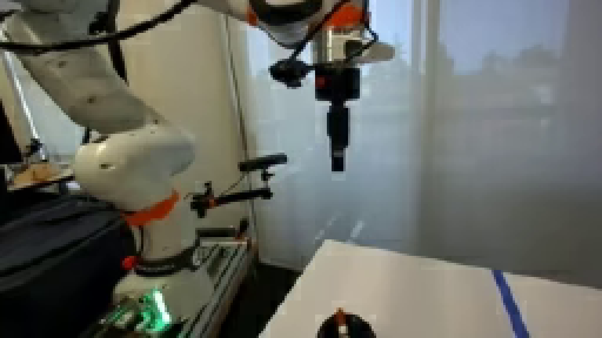
视觉工具实际返回图片 4
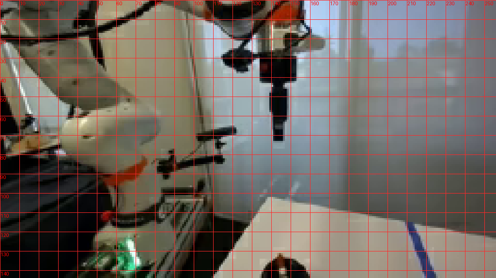
视觉工具实际返回图片 5
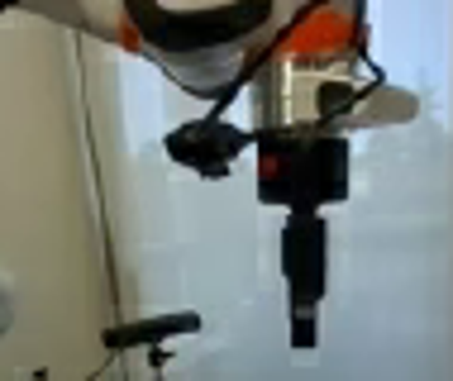
视觉工具实际返回图片 6
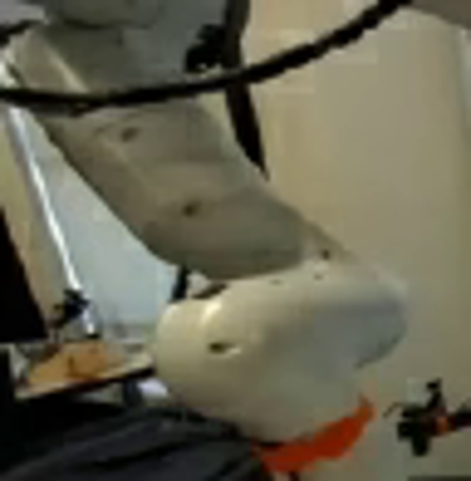
视觉工具实际返回图片 7

视觉工具实际返回图片 8
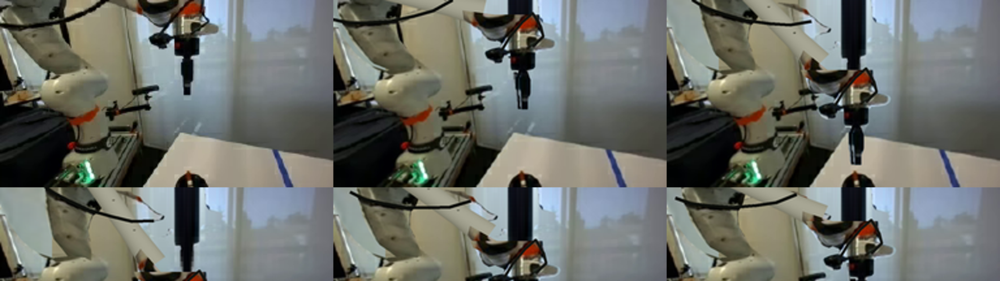
视觉工具实际返回图片 9
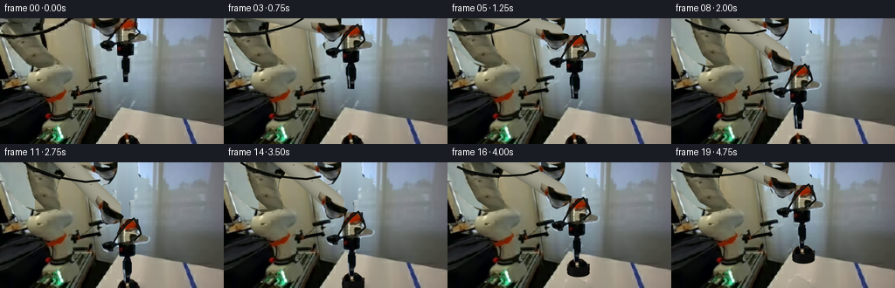
视觉工具实际返回图片 10
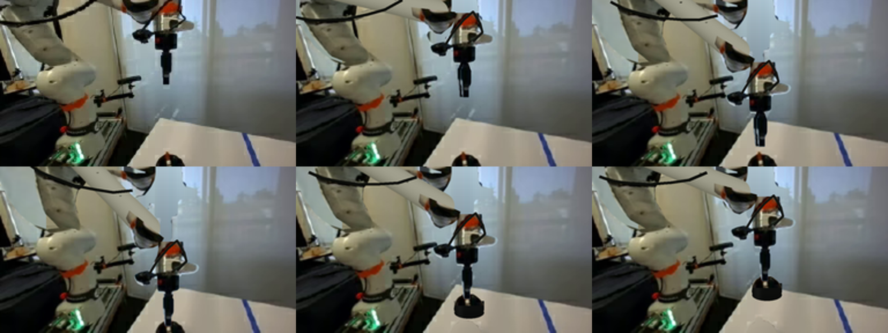
视觉工具实际返回图片 11

视觉工具实际返回图片 12
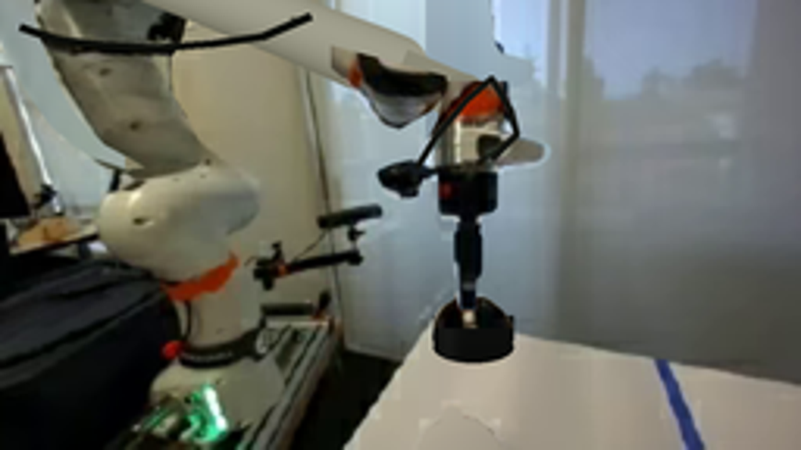
视觉工具实际返回图片 13

保存候选 5 份；完成命令 13 次；可验证图片返回 13 张。原始 API 响应与完整日志保留在本地。